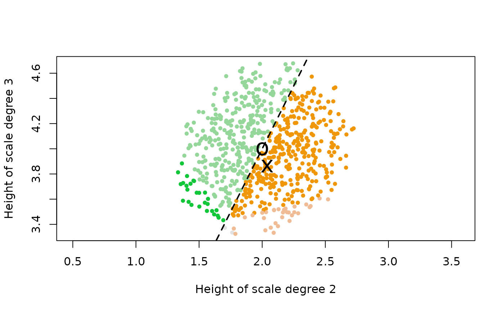

Sometimes it's useful to explore a flat or a color by testing
small differences that result from different positions within the
flat. This function generates random points on the desired flat
to test, similar to surround_set() but constrained to lie on
a target flat. Requires a base set that serves as an "origin"
around which the random scales are to be generated (before being
projected onto the target flat).
Usage
populate_flat(
set,
target_scale = NULL,
target_rows = NULL,
start_zero = TRUE,
ineqmat = NULL,
edo = 12,
rounder = 10,
magnitude = 2,
distance = 1
)Arguments
- set
Numeric vector of pitch-classes in the set
- target_scale
A numeric vector which represents a scale on the target flat.
- target_rows
An integer vector: each integer specifies a row of
ineqmatwhich helps to determine the target flat. The rows must be linearly independent.- start_zero
Boolean: should the result be transposed so that its pitch initial is zero? Defaults to
TRUE.- ineqmat
Specifies which hyperplane arrangement to consider. By default (or by, explicitly entering "mct") it supplies the standard "Modal Color Theory" arrangements of
getineqmat(), but can be set to "white" or "roth", giving theineqmats ofmake_white_ineqmat()andmake_roth_ineqmat(). For other arrangements, the desired inequality matrix can be entered directly.- edo
Number of unit steps in an octave. Defaults to
12.- rounder
Numeric (expected integer), defaults to
10: number of decimal places to round to when testing for equality.- magnitude
Numeric value specifying how many sets to return. Defaults to
2.- distance
How far (in units of voice leading work, using the Euclidean metric) should the sampled scales be from the input
set?
Value
A matrix whose columns represent scales on the desired flat.
The matrix has n rows (where n is the number of notes in set) and
n * 10^magnitude columns.
Details
The target flat can be specified by naming the target_rows that
determine the flat (in the manner of project_onto()) or by
naming a target_scale on the desired flat. Both parameters default
to NULL, in which case the function populates the flat that set
itself lies on.
Examples
# Let's sample several scales on the same flat as j(dia):
major <- c(0, 2, 4, 5, 7, 9, 11)
jdia_flat_scales <- populate_flat(major, j(dia))
unique(apply(jdia_flat_scales, 2, whichsvzeroes), MARGIN=2)
#> [,1]
#> [1,] 4
#> [2,] 8
#> [3,] 11
#> [4,] 14
#> [5,] 18
#> [6,] 23
#> [7,] 25
#> [8,] 30
#> [9,] 33
#> [10,] 37
#> [11,] 38
#> [12,] 41
# So all the scales do lie on one flat, but they may be different colors.
# Let's plot them using different literal colors to represent the scalar "colors."
jdia_flat_svs <- apply(apply(jdia_flat_scales, 2, signvector), 2, toString)
unique_svs <- sort(unique(jdia_flat_svs))
match_sv <- function(sv) which(unique_svs == sv)
sv_colors <- grDevices::hcl.colors(length(unique_svs),
palette="Green-Orange")[sapply(jdia_flat_svs, match_sv)]
plot(jdia_flat_scales[2,], jdia_flat_scales[3,], pch=20, col=sv_colors,
xlab = "Height of scale degree 2", ylab = "Height of scale degree 3",
asp=1)
abline(0, 2, lty="dashed", lwd=2)
points(j(2), j(3), cex=2, pch="x")
points(2, 4, cex=2, pch="o")

# Most of our sampled sets belong to two colors separated by the dashed
# line on the plot. The dashed line represents the inequality that determines
# the size of a scale's second step in relation to its first step. This is
# hyperplane #1 in the space, so it corresponds to the first entry in each
# scale's sign vector. The point labeled "x" represents the just diatonic scale
# itself, which has a larger first step than second step. The point labeled
# "o" represents the 12-equal diatonic, whose whole steps are all equal and which
# therefore lies directly on hyperplane #1. Finally, note that our sampled scales
# also touch on a few other colors at the bottom & left fringes of the scatter plot.